Webinar live · Andrea Audisio
La morte del
PERSONAL
BRAND
Far crescere il fatturato
senza far crescere le tue ore.
senza far crescere le tue ore.
Andrea Audisio
So perché sei qui
Vuoi far crescere
il tuo business.
Più fatturato, con uno sforzo sostenibile.
Senza dover aggiungere ore a una giornata già piena.
Senza dover aggiungere ore a una giornata già piena.
01
Crescita
02
Margine
03
Tempo per vivere
002
Quello che desideri
Vuoi clienti con cui
hai voglia di lavorare.
Persone in target che riconoscono il valore del tuo lavoro.
Non rapporti che ti consumano tempo ed energie.
Non rapporti che ti consumano tempo ed energie.
01
Bisogno coerente
02
Valore riconosciuto
03
Rapporto sostenibile
003
Quello che desideri
Vuoi essere scelto.
Senza convincere ogni volta.
Persone che arrivano avendo capito perché potresti aiutarle.
Conversazioni utili, invece di inseguimenti e trattative infinite.
Conversazioni utili, invece di inseguimenti e trattative infinite.
01
Capisce il problema
02
Riconosce il tuo valore
03
Vuole fare un passo
004
Quello che desideri
Vuoi diventare un riferimento.
E farti pagare per il tuo valore.
Un business che ti rappresenta, fondato sulla tua competenza.
Senza dover competere soltanto sul prezzo.
Senza dover competere soltanto sul prezzo.
01
Competenza riconoscibile
02
Ragioni per sceglierti
03
Valore che si comprende
005
La diagnosi che fai
E pensi che ti manchino visibilità,
follower o tecniche di vendita.
Più contenuti. Una bio migliore. Un nuovo modo di chiudere le call.
È lì che continui a cercare la soluzione.
È lì che continui a cercare la soluzione.
01
Farmi vedere di più
02
Sistemare il profilo
03
Convincere meglio
006
Quello che ti farò vedere
Quelli che chiami problemi
possono essere soltanto i sintomi.
Prima di cambiare ancora contenuti, profilo o vendita,
guardiamo che cosa impedisce al cliente di fidarsi.
guardiamo che cosa impedisce al cliente di fidarsi.
01
Il sintomo si vede alla fine
02
La causa può nascere prima
03
Partiamo dalla fiducia
007
Che cosa sta succedendo
Pubblicare è più facile.
Capire di chi fidarsi, molto meno.
Telefono, AI, format simili, promesse simili.
Il cliente deve capire chi sa davvero fare ciò che promette.
Il cliente deve capire chi sa davvero fare ciò che promette.
01
Contenuti facili da produrre
02
Proposte che si assomigliano
03
Scelta più difficile
008
La premessa
Il cliente vede tante promesse.
Come fa a capire di chi fidarsi?
Apri Instagram: offerte simili, parole simili, risultati incredibili.
Essere visibile non basta a rendere credibile quello che prometti.
Essere visibile non basta a rendere credibile quello che prometti.
01
Promesse simili
02
Confronto più difficile
03
Servono ragioni per fidarsi
009
Quello che succede dopo
Chiede informazioni. Confronta.
Poi ti dice «ci penso».
Il dubbio emerge in chat o in call.
Le ragioni per scegliere dovrebbero iniziare molto prima.
Le ragioni per scegliere dovrebbero iniziare molto prima.
01
Ti scopre
02
Valuta il rischio
03
Rimanda la decisione
010
Fiducia
Farti conoscere e farti scegliere
sono due lavori diversi.
La riconoscibilità aiuta. La fiducia richiede una proposta chiara,
prove pertinenti e un’esperienza coerente con la promessa.
prove pertinenti e un’esperienza coerente con la promessa.
ESSERE CONOSCIUTO
So chi sei. Ti ho già visto. Mi ricordo di te.
AVERE RAGIONI PER SCEGLIERTI
Capisco cosa ricevo, perché può servirmi e quale rischio mi assumo.
011
Il problema da risolvere
Prima di chiedere fiducia,
serve un motivo concreto per dartela.
Offerta comprensibile. Prova pertinente. Primo passo utile.
Il contenuto serve dentro questo percorso.
Il contenuto serve dentro questo percorso.
01
Capisco la proposta
02
Vedo come lavori
03
Posso fare un primo passo
012
Il problema
Sei bravo nel tuo lavoro.
Sul profilo sembri uno dei tanti.
BIO
BIO
BIO
TU
BIO
BIO
BIO
Anni di esperienza ridotti
a una bio e a un altro consiglio generico.
a una bio e a un altro consiglio generico.
013
I numeri che contano
Il reel va.
Le richieste non arrivano.
Attenzione
↑
Richieste
?
Hai ottenuto attenzione.
Il conto corrente non se n’è accorto.
Il conto corrente non se n’è accorto.
014
La chat
“Mi mandi informazioni?”
E poi la chat sparisce.
Tempo o denaro spesi.
Contatto senza seguito.
Contatto senza seguito.
Mi mandi informazioni?
Certo, ecco come funziona…
Letto. Nessuna risposta.
015
Che cosa facciamo stasera
Rimettiamo le decisioni
nell’ordine giusto.
Offerta, fiducia, risposta del mercato e percorso del cliente.
Molte attività si possono delegare già mentre le imposti: vedremo quali e come.
Molte attività si possono delegare già mentre le imposti: vedremo quali e come.
01
Offerta e mercato
02
Acquisizione, vendita e delivery
03
Delega e responsabilità
016
Che cosa ti porti a casa
Capire dove intervenire.
E chi deve fare il lavoro.
Vedrai come rendere acquistabile l’offerta e metterla alla prova.
E quali attività puoi delegare subito, chi prepara il lavoro e che cosa resta a te.
E quali attività puoi delegare subito, chi prepara il lavoro e che cosa resta a te.
01
Dove intervenire
02
Cosa delegare da subito
03
Quali decisioni restano tue
017
Per chi è questa serata
Hai una competenza reale.
Puoi essere già partito. O partire da zero.
Conta saper fare qualcosa che abbia valore per un cliente.
E accettare che costruire il business richiede tempo, impegno e applicazione.
E accettare che costruire il business richiede tempo, impegno e applicazione.
HAI GIÀ UN’ATTIVITÀ
Vuoi rendere più chiara l’offerta e organizzare meglio il lavoro.
DEVI ANCORA PARTIRE
Hai una competenza vera e sei disposto a metterla alla prova sul mercato.
018
Per chi è · anche per i colleghi
È anche per i miei competitor.
Magari aggiorniamo pure la loro offerta.
Se oggi rinneghi quello che vendevi ieri, spiega cos’è cambiato.
I clienti si ricordano delle indicazioni che hai dato.
I clienti si ricordano delle indicazioni che hai dato.
CAMBIARE SLOGAN
Dire il contrario di ieri non basta a far funzionare il business del cliente.
AGGIORNARE IL LAVORO
Quali attività vengono fatte? Da chi? Con quali strumenti e quale supporto?
019
Per chi non è
Se cerchi soldi facili
senza fare la tua parte, non è qui.
Non inventiamo una competenza da vendere.
Non promettiamo incassi o clienti immediati a prescindere da quello che fai.
Non promettiamo incassi o clienti immediati a prescindere da quello che fai.
020
Per chi non è
Vuoi delegare il lavoro.
O scaricare ogni responsabilità?
Se vuoi sparire e far reggere tutto agli altri, questo percorso non fa per te.
Informazioni, scelte, esperienza e impegno restano anche tuoi.
Informazioni, scelte, esperienza e impegno restano anche tuoi.
01
Porti la competenza
02
Ti assumi le decisioni
03
Partecipi all’applicazione
021
Per chi non è
Se per te fare business significa
fare cose carine su Instagram.
Questa serata non fa per te.
Contenuti «autentici», reel perfetti e belle grafiche vengono dopo offerta, clienti e consegna.
Contenuti «autentici», reel perfetti e belle grafiche vengono dopo offerta, clienti e consegna.
01
Prima l’offerta
02
Poi il confronto col mercato
03
La cura dei contenuti viene dopo
022
Stasera
Rimettiamo il business
nell’ordine giusto.
Molte attività si possono delegare già dall’inizio.
Vedremo quali, chi prepara il lavoro e quali decisioni restano tue.
Vedremo quali, chi prepara il lavoro e quali decisioni restano tue.
01
L’offerta che si sceglie
02
La risposta del mercato
03
Acquisizione clienti
04
Vendita
05
Delivery
06
Delega del sistema
La delega attraversa le fasi. Alla fine rendi più autonomo l’insieme.
023
Io questo mestiere
l’ho fatto dall’interno.
Dal 2007: aziende, clienti, persone,
vendite e problemi da risolvere.
vendite e problemi da risolvere.
024
La mia storia
Volevo essere libero.
Ho aperto partita IVA
a 18 anni.
Primo imprenditore della mia famiglia.
Prima pulivo discoteche di notte.
Volevo costruire qualcosa di mio.
Prima pulivo discoteche di notte.
Volevo costruire qualcosa di mio.
→
025
2019–2020 · World Group Torino
Da Kelevra
a World Group.
30%
Socio nel gruppo
Un gruppo da circa 20 milioni di euro.
6 dipendenti diretti.
Budget marketing anche oltre 100K€ per progetto.
6 dipendenti diretti.
Budget marketing anche oltre 100K€ per progetto.
Worldcom: la branch comunicazione. Dimensioni del gruppo, non fatturato personale.
026
Il mio percorso
Brand e progetti corporate
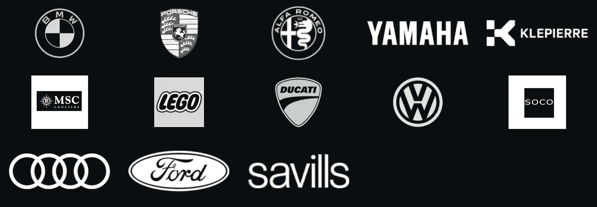
Progetti seguiti anche tramite agenzie e gruppi.
027
Il mio percorso
Dentro il mondo delle agenzie
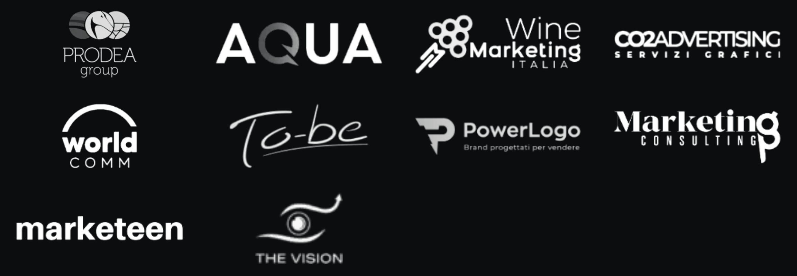
Aziende, progetti e collaborazioni del mio percorso.
028
Progetti, persone e responsabilità reali
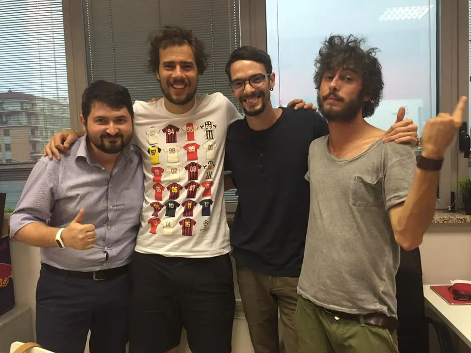
029
2020 · La spesa a domicilio
1,5M€
circa, in due mesi
3.000
spese a settimana, circa
E-commerce→Ads→Automazioni→Logistica
030
2018–2021 · Blackship SRL
Direttore
Marketing
7.000
persone all’anno
in aula nella realtà formativa
in aula nella realtà formativa
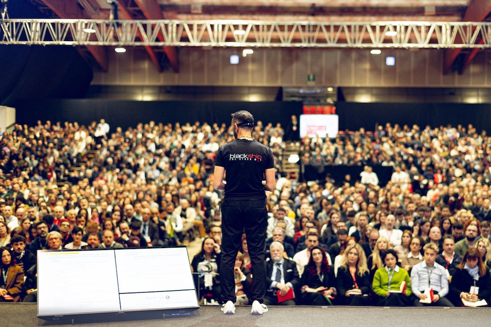
Formazione dal vivo · Blackship
031
I clienti sono diventati
i miei datori di lavoro.
01
Più clienti
02
Più richieste
03
Più urgenze
04
Sempre io
Avevo cambiato contratto.
La libertà era ancora lontana.
La libertà era ancora lontana.
032
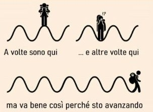
La strada non è stata
una linea retta.
Competenze in crescita.
Pressione in crescita.
Pressione in crescita.
033
Mi trattavano
come un cardiochirurgo.
URGENTE
Guadagnavo meno. E non salvavo vite.
Guadagnavo meno. E non salvavo vite.
034
Mi sono ritrovato
con l’acqua alla gola.
035
Poi mi hanno
ricoverato.
PNX spontaneo.
036
Mi sono fermato.
Doveva esistere
un’altra strada.
Continuare allo stesso modo
non poteva essere l’unica opzione.
non poteva essere l’unica opzione.
037
Ho iniziato a costruire
asset e processi.
01
Offerta
02
Acquisizione
03
Vendita
04
Team e processi
Il valore resta anche oltre la mia singola ora.
038
2021 · Consulente High Ticket
Ho ricominciato
costruendo un’azienda mia.
500K€
nei primi sei mesi
400+
clienti seguiti
Coach, consulenti e professionisti.
Dalle ore vendute
ai pacchetti ad alto valore.
Dalle ore vendute
ai pacchetti ad alto valore.
039
Quello che ho portato nel mercato
Modelli che oggi riconosci.
Un lavoro iniziato prima di CHT.
Dal setting al percorso del cliente, fino all’organizzazione commerciale.
Consulente High Ticket li porta dentro una metodologia B2B.
Consulente High Ticket li porta dentro una metodologia B2B.
01
Appointment setting · dal 2018
02
Community funnel · 2021
03
CRM e outreach strutturato
040
Formazione e aziende digitali
Progetti diversi.
Lo stesso lavoro dentro il business.
King Seduction
Investitore Efficace
Studente Felice
RQI.me
Fabio Bussacchini
CAMA · Accademia Marketing Digitale
SistemiLegali
Protocollo Anticrisi
PlayLover Academy
SOS Relazioni
Zendiet
Lorenzo Savasta
The Vision Academy
Samuele Ferrari
Metodo Immobiliare
041
Persone, progetti, risultati
Le persone che ho aiutato
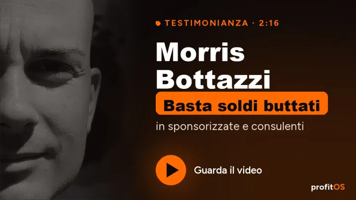
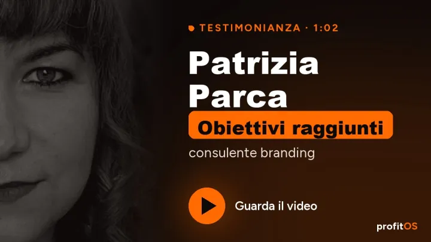

E molte altre persone.
042
Un’altra ricaduta
Pensavo di aver costruito.
Mi sono ritrovato a ricominciare.
Il socio aveva replicato il business che avevamo costruito insieme.
Ricostruzione illustrativa AI
043
La lezione di quella ricaduta
Ho capito che cosa
dovevo proteggere.
Un business può essere copiato. La sua solidità va costruita anche dentro.
01
Know-how e asset
02
Team e responsabilità
03
Processi che restano
044
Il lavoro diventa esperienza condivisa
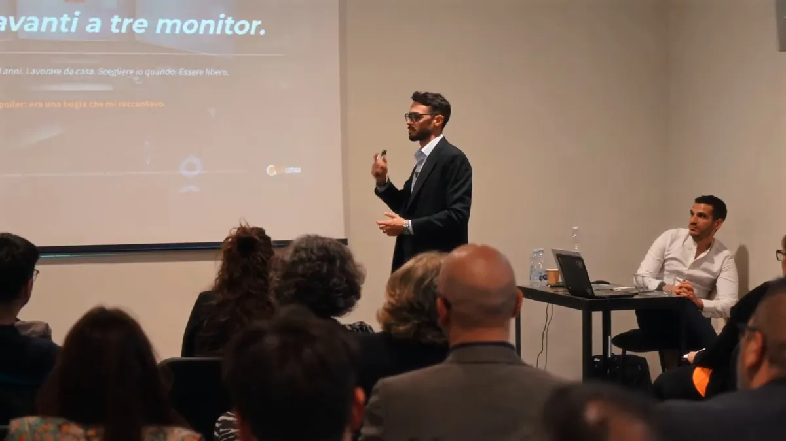
045
Lavorare sul business, insieme
046
Sul campo. Sul palco. Anche online.
047
2023
Digital Product
Mastery
Divento socio di Mik Cosentino nel progetto Digital Product Mastery.
048
Digital Product Mastery
Nel 2023, un nuovo progetto.
Con Mik Cosentino.
Digital Product Mastery
500K€+
nei primi sei mesi
Monetizzare il mondo dell’AI.
Costruire e vendere
un’offerta sul mercato.
Costruire e vendere
un’offerta sul mercato.
049
Il lavoro dietro le quinte
Investimenti. Trading.
Immobiliare. Agenzie.
Offerta, acquisizione, vendita e organizzazione dentro aziende diverse.
01
Offerte e posizionamento
02
Acquisizione e vendita
03
Team e procedure
Founder, socio, COO, CMO e partner operativo: ruoli diversi nei diversi progetti.
050
Sales Valley
Dalle lezioni imparate
a una nuova azienda.
Hiring di sales e setter per il mercato B2B.
100+
clienti B2B
Clienti corporate
Verisure · Eolo
Union Energia
Union Energia
051
Investitore Efficace · Felipe Orrego
Da un’idea
a un’azienda da 4 milioni.
Sono entrato nel board di Investitore Efficace.
≈4M€
fatturato dell’azienda nel 2025
Brand e community funnel. Acquisizione e vendita.
Procedure e organizzazione.
Procedure e organizzazione.
052
Evolutiaa · Finotti e Barletta
La crescita diventa
un’azienda strutturata.
6K → 35K€+
di fatturato mensile, in tre mesi
Team. Procedure.
KPI e lanci.
KPI e lanci.
053
ProfitOS · Il progetto di cui parliamo stasera
Con ProfitOS,
la prima cavia sono stato io.
100K€+
incassati in un mese
4 persone nel team3 part-time
054
Perché ho fondato ProfitOS
Far crescere un’azienda.
Partecipare al valore che costruisco.
Dalle esperienze operative a un modello orientato anche alle partecipazioni.
01
Contribuire alla crescita
02
Costruire un sistema
03
Valutare una partecipazione
055
La selezione dei progetti
Prima un’azienda concreta.
Poi si può parlare di percentuali.
Per una partnership devono esserci fondamenta, operatività e un progetto da far crescere.
PROGETTO PRONTO
Valutiamo se esistono le condizioni per lavorare in partnership.
FONDAMENTA DA COSTRUIRE
Prima si lavora su offerta, mercato e struttura, con il percorso adatto.
056
La vita che volevo costruire
Volevo essere libero.
Anche fuori dal lavoro.
Vivere in un posto che mi piace.
Fare sport. Dedicarmi alle mie passioni.
Fare sport. Dedicarmi alle mie passioni.
Togliere le dipendenze dal mio business.
Libertà finanziaria.
Un business che mi permetta
di vivere tranquillo.
Un business che mi permetta
di vivere tranquillo.
057
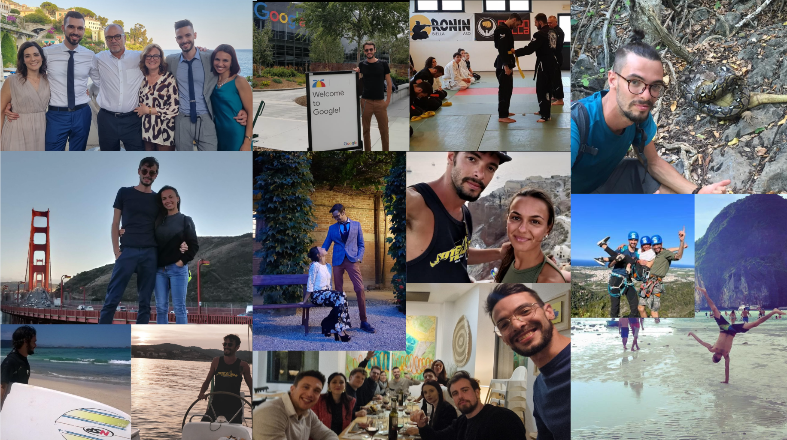
È per questo che
riconosco quella gabbia.
Vendi già. Sei competente.
Ma tutto aspetta ancora te.
Ma tutto aspetta ancora te.
059
Il problema
Il business funziona.
Finché ci sei tu.
Sei la persona che
non può permettersi di fermarsi.
non può permettersi di fermarsi.
060
Il secondo turno
Hai finito con i clienti.
Adesso devi trovare i prossimi.
Giorno
Clienti
Secondo turno
Instagram
E il secondo turno comincia davanti a Instagram.
061
22:47
Stai ancora
rispondendo.
“Poi stacco.”
Poi arriva un altro messaggio.
Poi arriva un altro messaggio.
062
Il paradosso
Il mese è andato meglio.
Tu sei arrivato peggio.
Il business
↑ clienti
La tua giornata
↓ spazio
Più clienti. Più incastri.
Meno spazio per tutto il resto.
Meno spazio per tutto il resto.
063
Il concetto ce l’hai già
Tu sai già
che cosa c’è da fare.
Hai visto webinar, corsi, workshop e contenuti.
Il problema è trovare il tempo per eseguire tutto, mentre lavori.
Il problema è trovare il tempo per eseguire tutto, mentre lavori.
064
Hai comprato
il metodo.
Lunedì sei
di nuovo qui.
di nuovo qui.
“Va bene. Ma adesso,
concretamente, cosa faccio?”
concretamente, cosa faccio?”
065
“Forse il problema
sono io.”
Hai capito la teoria.
Ti manca il tempo per farla.
Ti manca il tempo per farla.
066
Ti seguono per imparare.
Tu volevi farti pagare per farlo.
01
Guarda il tutorial
02
Impara a farlo
03
Lo fa da sé
Ogni tutorial può attirare
un altro cliente del fai da te.
un altro cliente del fai da te.
067
Hai cambiato bio, format
e calendario. Ancora.
01
Nuova bio
02
Nuovo format
03
Nuovo calendario
04
Si ricomincia
Non sai quale passaggio perde clienti.
Così ricominci da quello che si vede.
Così ricominci da quello che si vede.
068
Il problema
Adesso sai fare marketing.
Quando fai il tuo mestiere?
Copywriter
Videomaker
Setter
Tecnico
E il tuo mestiere?
069
Le soluzioni sul mercato
Un corso può spiegartelo bene.
La produzione può restare tutta a te.
Metodo, esempi e procedure possono essere utili.
La domanda è chi prepara, pubblica e mantiene ciò che hai imparato.
La domanda è chi prepara, pubblica e mantiene ciò che hai imparato.
QUELLO CHE PUOI RICEVERE
Lezioni, modelli e un metodo da applicare.
QUELLO CHE DEVI ORGANIZZARE
Tempo, prime versioni, implementazione e continuità.
070
Le soluzioni sul mercato
La call finisce.
Il lavoro comincia.
Anche un buon affiancamento va valutato per gli output,
le responsabilità e il tempo reale che hai per applicare.
le responsabilità e il tempo reale che hai per applicare.
01
Ricevi indicazioni
02
Produci e applichi
03
Porti il lavoro in revisione
071
Le soluzioni sul mercato
Delegare un pezzo è utile.
Chi collega tutto il resto?
Un fornitore può fare contenuti, campagne o pagine.
Il mandato deve chiarire chi tiene insieme offerta, contatti, vendita e consegna.
Il mandato deve chiarire chi tiene insieme offerta, contatti, vendita e consegna.
ESECUZIONE DELEGATA
Il fornitore produce il lavoro compreso nel mandato.
RESPONSABILITÀ DA CHIARIRE
Decisioni, materiali, passaggi e coordinamento delle altre attività.
072
Le soluzioni sul mercato
L’AI dovrebbe toglierti lavoro.
Non aggiungere un altro mestiere.
Se devi riscrivere il contesto, scegliere tra mille bozze e collegare tool,
una parte della fatica si è soltanto spostata.
una parte della fatica si è soltanto spostata.
01
Più bozze e strumenti
02
Più passaggi da controllare
03
Chi tiene il contesto?
073
Tre cose da rimettere
nell’ordine giusto
01
Offerta che si sceglie
02
Mercato che risponde
03
Sistema che esegue
Un’offerta che si sceglie.
Un mercato che risponde.
Un sistema che esegue.
Un mercato che risponde.
Un sistema che esegue.
074
IL PERSONAL BRAND
VIENE DOPO
La riconoscibilità sostiene il sistema.
Non ne sostituisce le fondamenta.
Non ne sostituisce le fondamenta.
075
I messaggi che senti sul mercato
Ecco che cosa ti ripetono
sul personal brand.
Vediamo cosa c’è di utile. E quali conclusioni non reggono.
01
Ti servono più follower
02
Devi pubblicare ogni giorno
03
Devi diventare autorevole
076
Ma prima di seguirti,
perché dovrei comprarti?
Questa è la domanda che il profilo non può evitare.
01
Problema riconosciuto
02
Soluzione desiderabile
03
Motivo per scegliere te
077
“Ti servono più follower.”
COSA C’È DI VERO
Più persone pertinenti possono conoscere il tuo lavoro.
Pubblico pertinente→Conoscenza
IL SALTO SBAGLIATO
Dare per scontato che più pubblico significhi più clienti.
Più follower→Più clienti?
078
Puoi essere seguito
senza essere scelto.
Un contenuto può piacere a chi non comprerà mai il tuo servizio.
01
Ti vedono
02
Ti seguono
03
Valutano se comprare
079
“Devi pubblicare ogni giorno.”
COSA C’È DI VERO
La continuità aiuta a spiegare e a farti ricordare.
Continuità→Ricordo
IL SALTO SBAGLIATO
Usare la frequenza per compensare una proposta poco chiara.
Più post→Offerta più chiara?
080
Se la promessa è confusa,
la ripeti più spesso.
Il calendario non decide che cosa rende desiderabile la tua offerta.
01
Promessa confusa
02
Più pubblicazioni
03
Stessa confusione
081
“Prima costruisci l’organico.
Poi puoi fare pubblicità.”
COSA C’È DI VERO
Contenuti e conversazioni possono creare fiducia.
Contenuti→Fiducia
IL SALTO SBAGLIATO
Aspettare un pubblico grande prima di mettere alla prova una proposta.
Attesa del pubblico→Test rimandato
082
Organico dice da dove arriva.
Non dice perché compra.
Il canale non sostituisce offerta, prova e percorso di decisione.
01
Da dove arriva
02
Cosa trova
03
Perché decide
083
“Devi diventare autorevole.”
COSA C’È DI VERO
Il cliente deve avere ragioni concrete per fidarsi.
Prove concrete→Fiducia
IL SALTO SBAGLIATO
Confondere una percezione costruita con un risultato che sai consegnare.
Percezione→Consegna reale?
084
La competenza va resa visibile.
E va resa acquistabile.
01
Competenza reale
02
Prova osservabile
03
Offerta acquistabile
Una storia interessante, da sola, non definisce cosa riceve il cliente.
085
“È tutta una questione di nicchia.”
COSA C’È DI VERO
Una proposta specifica si capisce meglio.
Proposta specifica→Comprensione
IL SALTO SBAGLIATO
Inventare un’etichetta sempre più stretta senza verificare un bisogno reale.
Etichetta stretta→Bisogno reale?
086
“Ti basta un funnel migliore.”
COSA C’È DI VERO
Un percorso chiaro aiuta una persona a decidere.
Percorso chiaro→Decisione
IL SALTO SBAGLIATO
Chiedere alla pagina di creare il desiderio che manca nell’offerta.
Pagina migliore→Desiderio assente?
087
Quindi cosa teniamo?
Ascoltare il cliente. Chiarire l’offerta.
Mostrare prove. Curare il percorso di acquisto.
Mostrare prove. Curare il percorso di acquisto.
01
Ascolto del cliente
02
Offerta chiara
03
Prove
04
Percorso di acquisto
088
Il problema è l’ordine
e il lavoro che resta a te.
Partire dalla produzione di contenuti può nascondere il problema che andava risolto prima.
089
L’ordine giusto
Prima la struttura.
Poi la visibilità.
Riconoscibilità
Processi
Acquisizione e vendita
Offerta
Domanda e capacità di consegna
Si costruisce dal basso: domanda e consegna, offerta, acquisizione e vendita, processi. Poi la riconoscibilità.
090
L’ordine giusto
La visibilità amplifica
quello che c’è sotto.
Personal brand
Processi
Acquisizione e vendita
Offerta, margine e delivery
Problema reale del cliente
La visibilità arriva sopra una struttura che regge.
091
Il contenuto non può
risolvere ogni problema.
01
Non ti scoprono
→ acquisizione
→ acquisizione
02
Non chiedono
→ passaggio
→ passaggio
03
Non comprano
→ offerta/vendita
→ offerta/vendita
04
Non reggi
→ delivery
→ delivery
092
Ospite
Un’azienda prima di un personaggio
Felipe Orrego
Investitore Efficace
01Offerta e cliente
02Acquisizione e vendita
03Team e procedure
Perché ora: un’azienda può crescere prima del personaggio.
093
Primo Segreto
UN’OFFERTA CHE SI SCEGLIE
Rendi chiaro il motivo per cui comprare da te.
094
La tua competenza
non è ancora un’offerta.
01
Etichetta professionale
02
Problema del cliente
03
Lavoro acquistabile
“Sono un consulente.”
“Mi occupo di marketing.”
“Aiuto le persone a migliorare.”
“Mi occupo di marketing.”
“Aiuto le persone a migliorare.”
095
Il cliente compra
un cambiamento riconoscibile.
Deve capire che cosa cambia nella sua situazione se sceglie te.
01
Situazione iniziale
02
Intervento concreto
03
Cambiamento riconoscibile
096
Da chi parti?
Da una persona in una situazione precisa.
Non da un elenco di età, interessi e professioni.
Non da un elenco di età, interessi e professioni.
01
Situazione
02
Problema
03
Momento della scelta
097
Che cosa è successo
per farle cercare aiuto?
01
È successo qualcosa
02
Il problema diventa urgente
03
Cerca una soluzione
Un ritardo. Una perdita. Un’occasione.
Un problema che non vuole più accettare.
Un problema che non vuole più accettare.
098
Prima domanda da fare a un cliente
“Che cosa stava succedendo quando hai deciso che dovevi intervenire?”
099
Seconda domanda
“Che cosa avevi già provato?
Perché non ti bastava?”
Perché non ti bastava?”
100
Terza domanda
“Che cosa ti ha convinto?
Che cosa ti ha fatto esitare?”
Che cosa ti ha fatto esitare?”
101
Le risposte ti danno
il linguaggio dell’offerta.
Non devi indovinare il problema con un prompt.
Devi riconoscerlo nelle situazioni reali.
Devi riconoscerlo nelle situazioni reali.
01
Conversazioni vere
02
Parole ricorrenti
03
Messaggio dell’offerta
102
Che risultato puoi promettere
senza raccontare favole?
01
Sai produrlo
02
Sai delimitarlo
03
Sai dimostrarlo
Un cambiamento che sai produrre,
con un perimetro che puoi spiegare.
con un perimetro che puoi spiegare.
103
Perché il tuo modo di lavorare
dovrebbe portare a quel risultato?
Spiega i passaggi e il motivo per cui servono.
Dare un nome inglese al metodo non basta.
Dare un nome inglese al metodo non basta.
01
Problema
02
Passaggi del tuo lavoro
03
Risultato
104
Emergere significa dare
un criterio di scelta.
“SONO DIVERSO”
Qualità. Passione. Personalizzazione.
Lo dicono anche gli altri.
Lo dicono anche gli altri.
DIFFERENZA COMPRENSIBILE
Per chi lavori, quale problema affronti, come intervieni e cosa consegni.
105
Con cosa ti confronta davvero?
Con un altro fornitore. Con il fai da te.
Con rimandare. Con continuare come adesso.
Con rimandare. Con continuare come adesso.
01
Altro fornitore
02
Fai da te
03
Rimandare
04
Continuare così
106
La prova deve sostenere
proprio quella promessa.
01
Situazione iniziale
02
Lavoro svolto
03
Risultato nel contesto
Un risultato pertinente. Un esempio di lavoro.
Un prima e dopo spiegato. Un processo osservabile.
Un prima e dopo spiegato. Un processo osservabile.
107
Che cosa riceve, concretamente?
01
Documento
02
Implementazione
03
Cambiamento verificabile
Un documento? Un’implementazione?
Un cambiamento verificabile nel modo di lavorare?
Un cambiamento verificabile nel modo di lavorare?
108
Dove finisce il tuo lavoro?
Chi consegna i materiali. Chi decide.
Che cosa è incluso. Che cosa richiede un altro intervento.
Che cosa è incluso. Che cosa richiede un altro intervento.
01
Input necessari
02
Lavoro incluso
03
Limiti ed extra
109
Il cliente non valuta soltanto
quanto costa.
Valuta anche il rischio di perdere tempo,
sbagliare scelta e restare con lo stesso problema.
sbagliare scelta e restare con lo stesso problema.
01
Perdere tempo
02
Sbagliare scelta
03
Restare al punto di prima
110
Una garanzia deve rispondere
a una paura precisa.
01
Paura precisa
02
Impegno del fornitore
03
Rimedio chiaro
Che cosa teme di non ricevere?
Quale parte del risultato puoi assumerti tu?
Quale parte del risultato puoi assumerti tu?
111
Due rischi diversi,
due risposte diverse.
RISCHIO DI CONSEGNA
Il lavoro concordato non arriva.
Definisci il rimedio se manchi al tuo impegno.
Definisci il rimedio se manchi al tuo impegno.
RISCHIO DI APPLICAZIONE
Il lavoro arriva, ma il risultato richiede correzioni.
Chiarisci il supporto e le condizioni di prosecuzione.
Chiarisci il supporto e le condizioni di prosecuzione.
112
La controgaranzia:
gli impegni del cliente.
Informazioni corrette, materiali, approvazioni
e azioni concordate. Devono essere comprensibili prima.
e azioni concordate. Devono essere comprensibili prima.
01
Informazioni vere
02
Materiali e accessi
03
Approvazioni
04
Azioni concordate
113
Le condizioni servono
a far funzionare il lavoro.
Devono essere pertinenti e realizzabili.
Non una caccia alla clausola che rende impossibile usarle.
Non una caccia alla clausola che rende impossibile usarle.
01
Condizioni pertinenti
02
Impegni realizzabili
03
Verifica comprensibile
114
Scrivi l’offerta in questa forma
01
Cliente e situazione
02
Risultato e processo
03
Lavoro concreto
04
Impegni reciproci
Aiuto [cliente in questa situazione] a ottenere [risultato], attraverso [processo]. Ricevi [lavoro concreto]. Ci assumiamo [impegno]. A te chiediamo [parte necessaria].
115
Esempio illustrativo, senza listino
PRIMA
“Affiancamento personalizzato per far crescere la tua azienda.”
DOPO
“Organizziamo la gestione delle richieste commerciali: responsabilità, passaggi e seguito, fino a rendere utilizzabile il processo con il tuo team.”
116
Nello stesso esempio
“Il lavoro comprende il flusso concordato e la verifica con il team. Se manca una parte, la completiamo. Tu rendi disponibili persone, accessi e materiali necessari.”
01
Offerta chiara
02
Lavoro concreto
03
Passo successivo
117
Aggiungere bonus
non risolve una promessa debole.
Prima rendi desiderabile il risultato.
Poi valuta che cosa aiuta davvero a raggiungerlo.
Poi valuta che cosa aiuta davvero a raggiungerlo.
01
Risultato desiderato
02
Percorso credibile
03
Bonus utili
118
Prima di un altro contenuto,
riesci a rispondere?
01
Chi compra e perché
02
Che cosa riceve
03
Quale rischio riduci
04
Che cosa deve fare
Chi compra? Per cosa? Perché te?
Cosa riceve? Che rischio riduci? Cosa deve fare lui?
Cosa riceve? Che rischio riduci? Cosa deve fare lui?
119
L’esperienza acquista valore
quando diventa una proposta chiara.
120
Ospite
L’esperienza diventa un’offerta
Alessandro Labadini
Imprenditore e cliente ProfitOS
01Problema preciso
02Output che il cliente compra
03Personal brand al servizio dell’offerta
Perché ora: l’esperienza deve diventare un’offerta acquistabile.
121
Secondo Segreto
IL MERCATO DEVE RISPONDERE
La tua offerta non è validata perché ti piace.
122
Una proposta scritta bene
è ancora un’ipotesi.
01
Ipotesi di offerta
02
Persone pertinenti
03
Risposte del mercato
04
Nuova versione
Va messa davanti a persone che potrebbero davvero comprarla.
123
Che cosa devi scoprire?
01
Riconosce il problema
02
Vuole risolverlo
03
Capisce la proposta
04
Fa un passo concreto
Riconoscono il problema? Vogliono risolverlo?
Capiscono la proposta? Sono disposti a fare il prossimo passo?
Capiscono la proposta? Sono disposti a fare il prossimo passo?
124
Non serve costruire tutto
per iniziare a imparare.
Una proposta comprensibile, una prova pertinente
e un modo semplice per parlare con chi è interessato.
e un modo semplice per parlare con chi è interessato.
01
Una proposta
02
Una destinazione
03
Una risposta da osservare
125
Le ads possono servire
a mettere l’ipotesi davanti al mercato.
01
Proposta
02
Distribuzione
03
Persone pertinenti
04
Risposte utili
Distribuisci una proposta a persone pertinenti.
Non aspetti che il profilo diventi famoso.
Non aspetti che il profilo diventi famoso.
126
Un annuncio non valida
un’offerta da solo.
Un clic dice che qualcuno ha cliccato.
La domanda è che cosa succede dopo.
La domanda è che cosa succede dopo.
01
Vede l’annuncio
02
Clicca
03
Che cosa succede dopo?
127
Cosa mettere alla prova
MESSAGGIO
Il problema che il cliente riconosce e il risultato che cerca.
PASSO SUCCESSIVO
Una richiesta pertinente, una conversazione o un acquisto coerente con il servizio.
128
Puoi partire anche
da clienti e relazioni che hai già.
Le ads sono una strada per distribuire il test.
L’obiettivo è ricevere risposte utili, non difendere un canale.
L’obiettivo è ricevere risposte utili, non difendere un canale.
01
Clienti già acquisiti
02
Relazioni esistenti
03
Distribuzione con ads
129
Poi senti le persone.
01
Cosa cerca
02
Cosa non capisce
03
Cosa lo frena
04
Quali alternative valuta
Che cosa stanno cercando? Cosa non hanno capito?
Che cosa le frena? Con quali alternative ti confrontano?
Che cosa le frena? Con quali alternative ti confrontano?
130
Una domanda utile in conversazione
“Che cosa ti ha fatto fermare su questa proposta e che cosa vorresti cambiare nella tua situazione?”
131
Anche un rifiuto va capito.
01
Cliente adatto?
02
Urgenza reale?
03
Promessa chiara?
04
Prova sufficiente?
Non era il cliente? Non c’era urgenza?
La promessa era poco chiara? Mancava una prova?
La promessa era poco chiara? Mancava una prova?
132
Non rispondere a ogni dubbio
con una tecnica di chiusura.
Alcuni dubbi ti stanno dicendo
che cosa devi correggere a monte.
che cosa devi correggere a monte.
01
Obiezione
02
Origine del dubbio
03
Correzione a monte
133
Le obiezioni ricorrenti
entrano nella prossima versione.
01
Offerta attuale
02
Dubbio ricorrente
03
Correzione
04
Nuova versione
Riscrivi una promessa confusa. Chiarisci un confine.
Mostra una prova. Rendi più facile il primo passo.
Mostra una prova. Rendi più facile il primo passo.
134
Entrare più leggeri
può aiutare a costruire fiducia.
Un primo impegno più piccolo può permettere
al cliente di sperimentare il tuo modo di lavorare.
al cliente di sperimentare il tuo modo di lavorare.
135
Quel primo passo
deve valere anche da solo.
Deve risolvere qualcosa di reale.
Non essere una call travestita da regalo o un’esca vuota.
Non essere una call travestita da regalo o un’esca vuota.
136
Chiedere dopo ha senso
quando il passo successivo è meritato.
La persona ha ricevuto valore e riconosce
perché continuare può esserle utile.
perché continuare può esserle utile.
137
Adesso hai materiale vero.
01
Domande e parole
02
Obiezioni e decisioni
03
Risultati e prove
Domande. Obiezioni. Parole. Decisioni.
E, quando arrivano, risultati e prove da raccontare.
E, quando arrivano, risultati e prove da raccontare.
138
È il percorso verso l’acquisto
a dare significato all’attenzione.
139
Ospite
Quando l’account sparisce
Alessandro
Gaudenzi
Gaudenzi
Saleslife · Alla nascita di ProfitOS
Già direttore commerciale di Investitore Efficace
01Da zero con Saleslife
02Il ban dell’account
03I primi risultati con il lancio
140
E ORA I CONTENUTI.
QUELLI CHE SERVONO.
Hai qualcosa di chiaro da amplificare.
141
Perché vengono dopo
in questo lavoro?
01
Sai cosa proponi
02
Sai cosa blocca
03
Sai cosa dimostrare
Perché ora sai quale proposta spiegare,
quali dubbi affrontare e quali prove mostrare.
quali dubbi affrontare e quali prove mostrare.
142
I contenuti sono una parte
del sistema di acquisizione.
Aiutano una persona a riconoscere il problema,
capire la soluzione e fidarsi abbastanza da proseguire.
capire la soluzione e fidarsi abbastanza da proseguire.
01
Offerta
02
Contenuti e prove
03
Conversazione
04
Acquisto
05
Consegna
143
Primo materiale: una domanda reale.
01
Domanda del cliente
02
Esempio del tuo lavoro
03
Risposta utile
Prendi una domanda ricorrente di chi potrebbe comprare.
Rispondile con un esempio del tuo lavoro.
Rispondile con un esempio del tuo lavoro.
144
Secondo materiale: un dubbio che blocca.
01
Dubbio che blocca
02
Quando serve
03
Rischio ridotto
Spiega quando la tua soluzione serve,
quando non serve e quale rischio stai riducendo.
quando non serve e quale rischio stai riducendo.
145
Terzo materiale: una prova pertinente.
01
Prima
02
Lavoro svolto
03
Risultato contestualizzato
Mostra situazione iniziale, lavoro svolto
e risultato nel suo contesto.
e risultato nel suo contesto.
146
Se vuoi vendere l’esecuzione,
mostra anche come lavori.
Il tutorial può essere utile. Ma non lasciare che l’unico valore percepito sia imparare a fare tutto da soli.
01
Mostri il lavoro
02
Spieghi i criteri
03
Rendi visibile l’esecuzione
147
La risorsa deve continuare
il discorso appena iniziato.
01
Contenuto specifico
02
Risorsa pertinente
03
Dialogo coerente
Chi guarda un contenuto specifico
non sta necessariamente chiedendo una guida generica.
non sta necessariamente chiedendo una guida generica.
148
Dopo il contenuto,
qual è il prossimo passo?
01
Approfondimento
02
Risposta
03
Richiesta
04
Esperienza
Un approfondimento pertinente. Una risposta.
Una richiesta. Un’esperienza della tua soluzione.
Una richiesta. Un’esperienza della tua soluzione.
149
La riconoscibilità cresce
anche dalla coerenza del lavoro.
Problemi che affronti. Criteri che usi.
Prove che mostri. Promesse che mantieni.
Prove che mostri. Promesse che mantieni.
01
Problemi affrontati
02
Criteri usati
03
Prove mostrate
04
Promesse mantenute
150
Non devi aspettare
un’azienda perfetta per pubblicare.
Devi evitare di usare la pubblicazione
come sostituto della verifica dell’offerta.
come sostituto della verifica dell’offerta.
01
Pubblica e osserva
02
Verifica l’offerta
03
Correggi e amplifica
151
Questo è l’ordine delle decisioni.
Offerta. Risposta del mercato. Correzione.
Percorso di acquisto e consegna. Poi contenuti per amplificare.
Percorso di acquisto e consegna. Poi contenuti per amplificare.
01
Offerta
02
Test e ascolto
03
Percorso cliente
04
Consegna
05
Amplificazione
152
Terzo Segreto
SAPERE NON È ESEGUIRE
Adesso il modello è chiaro.
Lunedì mattina, chi lo mette in piedi?
Lunedì mattina, chi lo mette in piedi?
153
La ricetta può essere buona.
La pizzeria è un altro lavoro.
E servono persone, passaggi e responsabilità.
154
Hai comprato
il corso pizza.
Adesso gestisci
la pizzeria.
155
Fase 1 di 7
Rivedere l’offerta significa…
Raccogliere informazioni. Capire il cliente.
Scegliere promessa, processo, output e confini.
Scegliere promessa, processo, output e confini.
01
Offerta
02
Test sul mercato
03
Contenuti
04
Risorse e dialogo
05
Contatti e seguito
06
Vendita
07
Consegna
156
Fase 2 di 7
Metterla alla prova significa…
Preparare il messaggio e la destinazione.
Ricevere richieste. Ascoltare. Correggere.
Ricevere richieste. Ascoltare. Correggere.
01
Offerta
02
Test sul mercato
03
Contenuti
04
Risorse e dialogo
05
Contatti e seguito
06
Vendita
07
Consegna
157
Fase 3 di 7
Fare contenuti significa…
Trovare idee. Scegliere un angolo. Scrivere.
Girare. Preparare i materiali. Pubblicare.
Girare. Preparare i materiali. Pubblicare.
01
Offerta
02
Test sul mercato
03
Contenuti
04
Risorse e dialogo
05
Contatti e seguito
06
Vendita
07
Consegna
158
Fase 4 di 7
Educare significa…
Creare risorse pertinenti. Consegnarle.
Capire chi le ha chieste e proseguire il dialogo.
Capire chi le ha chieste e proseguire il dialogo.
01
Offerta
02
Test sul mercato
03
Contenuti
04
Risorse e dialogo
05
Contatti e seguito
06
Vendita
07
Consegna
159
Fase 5 di 7
Gestire i contatti significa…
Rispondere. Ricordare il contesto. Qualificare.
Fare seguito. Non perdere chi si era fermato.
Fare seguito. Non perdere chi si era fermato.
01
Offerta
02
Test sul mercato
03
Contenuti
04
Risorse e dialogo
05
Contatti e seguito
06
Vendita
07
Consegna
160
Fase 6 di 7
Vendere significa…
Arrivare con il contesto giusto. Capire il bisogno.
Aiutare a decidere. Registrare ciò che è stato concordato.
Aiutare a decidere. Registrare ciò che è stato concordato.
01
Offerta
02
Test sul mercato
03
Contenuti
04
Risorse e dialogo
05
Contatti e seguito
06
Vendita
07
Consegna
161
Fase 7 di 7
Consegnare significa…
Organizzare materiali, accessi e attività.
Seguire l’applicazione. Correggere. Raccogliere il risultato.
Seguire l’applicazione. Correggere. Raccogliere il risultato.
01
Offerta
02
Test sul mercato
03
Contenuti
04
Risorse e dialogo
05
Contatti e seguito
06
Vendita
07
Consegna
162
E in mezzo a tutto questo…
ci sei sempre tu.
A spostare informazioni. Ricordare i passaggi.
Ricostruire il contesto. Controllare che sia partito tutto.
Ricostruire il contesto. Controllare che sia partito tutto.
163
Non è una lista
di cose che non sai.
È una lista di lavori che qualcuno deve fare.
01
Strategia
02
Produzione
03
Gestione
04
Coordinamento
164
Il metodo può essere corretto.
Il lavoro può restare tutto a te.
QUELLO CHE RICEVI
Lezioni, procedure, modelli e correzioni.
QUELLO CHE VA CHIARITO
Chi produce la prima versione, la mette in funzione e la mantiene?
165
Anche il tempo di applicazione
fa parte del valore.
01
Punto di partenza
02
Tentativi
03
Correzioni
04
Tempo per applicare
Punti di partenza diversi richiedono tentativi e correzioni diversi.
Chiedi che cosa succede se ti serve più tempo.
Chiedi che cosa succede se ti serve più tempo.
166
Delegare un pezzo
può lasciare a te il resto.
IL PEZZO DELEGATO
Contenuti, campagne o pagine possono essere svolti da un fornitore.
IL LAVORO RESIDUO
Decisioni, informazioni e collegamenti tra attività devono comunque avere un responsabile.
167
L’AI può aumentare
anche il lavoro da gestire.
Più bozze, più strumenti e più automazioni
non significano automaticamente meno operatività.
non significano automaticamente meno operatività.
01
Più bozze
02
Più strumenti
03
Più passaggi da gestire
168
Un testo generato
non è ancora un sistema.
01
Offerta conosciuta
02
Processo rispettato
03
Informazioni trasferite
Deve conoscere la tua offerta, rispettare il processo
e lasciare informazioni utilizzabili al passaggio successivo.
e lasciare informazioni utilizzabili al passaggio successivo.
169
Quando crescono i volumi,
servono procedure che reggono.
170
Ospite
I volumi si reggono
sui processi
Daniele
Defina
Defina
Contenuti, produzione e organizzazione
01Produzione in blocco
02Montaggio e passaggi
03Controllo e pubblicazione
Il progetto · @dottoressa_cellulite
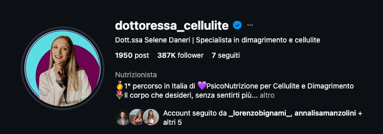
171
Il punto dell’intervento di Daniele
Un contenuto richiede
una catena di produzione.
E questa è soltanto una parte del lavoro del business.
01
Idee e riprese
02
Montaggio
03
Controllo e pubblicazione
172
Ricapitoliamo quello che abbiamo visto
Il business nell’ordine giusto.
L’offerta crea ragioni per fidarsi. Il mercato mette alla prova la proposta.
01
Offerta che si sceglie
02
Risposta del mercato
03
Acquisizione clienti
04
Vendita
05
Delivery
06
Delega del sistema
La delega può iniziare nelle singole attività fin dall’inizio.
173
Il problema dell’esecuzione
Ora chi prepara tutto questo,
mentre tu fai il tuo lavoro?
OFFERTA E TEST
Ricerca, proposta, prove, pagina e messaggi.
CONTENUTI
Idee, script, riprese, montaggio e pubblicazione.
CONTATTI E VENDITA
Qualifica, seguito, contesto e conversazioni.
CONSEGNA E CONTINUITÀ
Materiali, percorso, controllo e correzioni.
174
Il sistema che ho costruito
ProfitOS
Dalle decisioni al lavoro
che serve per applicarle.
Strumenti con il contesto del tuo business.
Un team per rivedere il lavoro
e aiutarti a correggerlo.
Un team per rivedere il lavoro
e aiutarti a correggerlo.
175
La chiamiamo
delega inversa.
Le decisioni restano tue.
La produzione parte da un lavoro già predisposto.
La produzione parte da un lavoro già predisposto.
01
Informazioni del cliente
02
Prima versione predisposta
03
Revisione con il team
04
Applicazione
176
PROBLEMA
L’OFFERTA
Sai fare il tuo lavoro.
Fai fatica a trasformarlo in una proposta.
Non sai cosa stringere, cosa promettere e cosa lasciare fuori.
177
Tool ProfitOS
Analisi dell’offerta
Dalle informazioni sul tuo business a una proposta scritta.
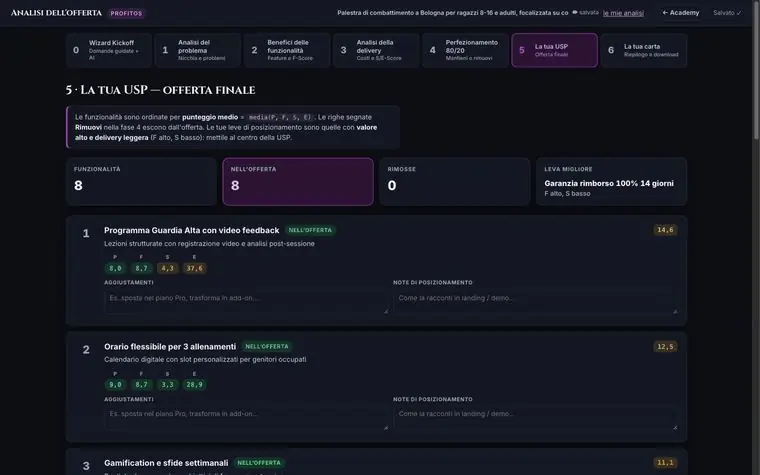
178
Che cosa cambia nel lavoro sull’offerta
TU PORTI
Esperienza, clienti, casi, vincoli e modo di lavorare.
Esperienza e casi→Input
IL SISTEMA PREPARA
Posizionamento, proposta scritta, brand book e risorse iniziali. Il team rivede il lavoro con te.
Tool + team→Proposta scritta
179
Il punto più delicato
non lo lasciamo a una risposta generica.
La proposta va confrontata con ciò che sai consegnare
e con le risposte del mercato. Qui interviene il supporto.
e con le risposte del mercato. Qui interviene il supporto.
01
Ciò che sai consegnare
02
Proposta preparata
03
Risposte del mercato
04
Correzione insieme
180
PROBLEMA
IL FUNNEL
Ogni volta riparti dal foglio bianco.
Che pagina? Quale struttura?
Cosa scrivo nelle email? Che cosa chiedo dopo?
Cosa scrivo nelle email? Che cosa chiedo dopo?
181
Tool ProfitOS
Funnel Builder
Parte dall’analisi dell’offerta e prepara il percorso.
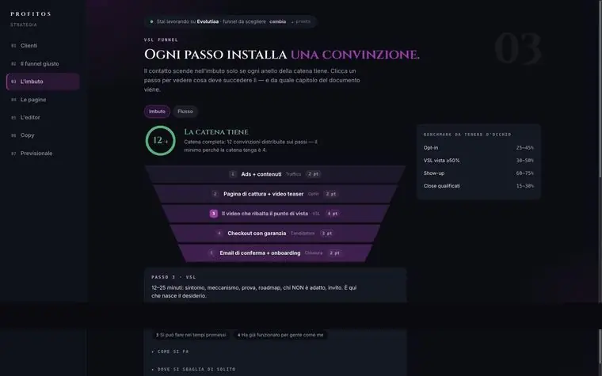
182
Dalla stessa offerta
a pagine, messaggi e sequenze.
Pagine online, ganci per le ads, email e script della call.
Una prima versione costruita sul contesto dell’offerta.
Una prima versione costruita sul contesto dell’offerta.
01
Offerta
02
Builder
03
Pagine ed email
04
Materiali di vendita
183
Il funnel va anche rifinito
e messo alla prova.
01
Tool e prima versione
02
Rifinitura in call
03
Test sul mercato
Nel Core lo lavori con i tool e lo rifinisci in call.
Nel Premium il team aggiunge realizzazione entro il perimetro previsto.
Nel Premium il team aggiunge realizzazione entro il perimetro previsto.
184
PROBLEMA
I CONTENUTI
Ogni pubblicazione sembra
un nuovo progetto.
Ricerca, idee, angolo, script, tono, formato e calendario.
185
Tool ProfitOS
Peddy
Dalla direzione strategica a un piano già lavorabile.
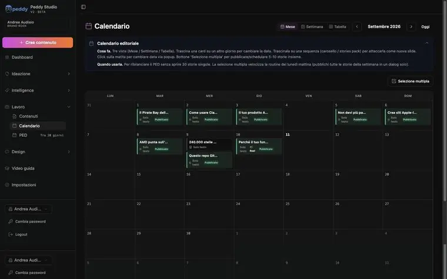
186
Peddy prepara
idee, script e piano editoriale.
Script e contenuti nel tuo tono e nel tuo brand.
Piano, calendario e gobbo per girare: parti da materiale preparato.
Piano, calendario e gobbo per girare: parti da materiale preparato.
01
Offerta e tono
02
Peddy
03
Script e calendario
04
Revisione e riprese
187
Produzione dei contenuti
La tua esperienza. Le tue riprese.
Il montaggio lo lavora il tool.
01
Input e script
02
Riprese quando servono
03
Fabbrica dei Reel
04
Controllo e pubblicazione
Registri i materiali, lavori il montaggio in batch e verifichi l’anteprima.
188
Montaggio video · Fabbrica dei Reel
Tu registri.
Il tool monta in batch.
Carichi più video insieme: ognuno diventa un video montato a parte.
Schermata reale · Progetto Andrea Audisio / ProfitOS
189
Fabbrica dei Reel · Controllo del risultato
Controlli il montaggio.
Poi pubblichi.
Testo, tagli e anteprima
nello stesso ambiente.
nello stesso ambiente.
Il controllo resta tuo.
Il montaggio parte
dal lavoro del tool.
Il montaggio parte
dal lavoro del tool.
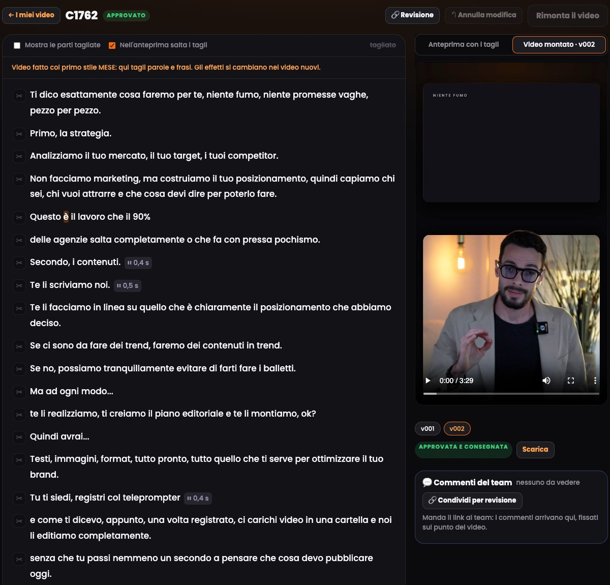
190
PROBLEMA
I CONTATTI
Il contenuto funziona.
Poi il dialogo si perde.
Una richiesta in un commento. Un materiale da mandare.
Una chat rimasta indietro. Un seguito dimenticato.
Una chat rimasta indietro. Un seguito dimenticato.
191
Tool ProfitOS
Setty
Collega risorsa, conversazione e contatto nel CRM.
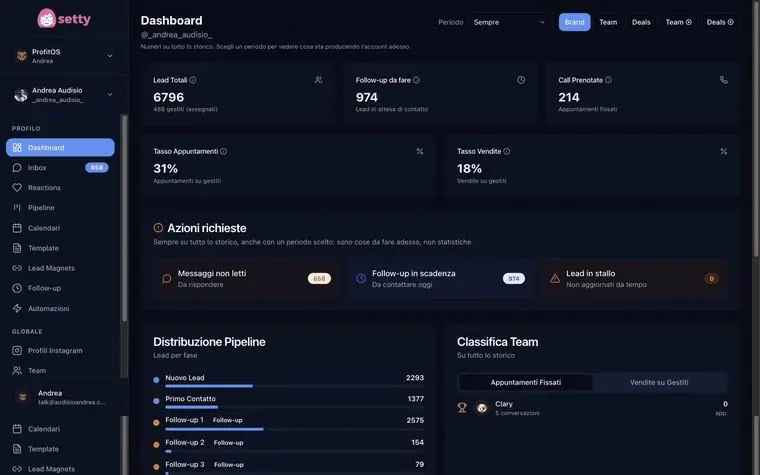
192
La persona chiede
una risorsa pertinente.
01
Richiesta pubblica
02
Risorsa pertinente
03
Dialogo privato
Setty collega la richiesta al materiale
e avvia il passaggio dalla risposta pubblica al dialogo privato.
e avvia il passaggio dalla risposta pubblica al dialogo privato.
193
Il dialogo prosegue
con un contesto.
Consegna il materiale, qualifica e fa follow-up.
Può proporre gli slot previsti per la call, anche quando non sei in chat.
Può proporre gli slot previsti per la call, anche quando non sei in chat.
01
Consegna
02
Qualifica
03
Seguito
04
Prossimo passo
194
Il contatto non vive
soltanto nella memoria di una chat.
01
Conversazione
02
Contesto nel CRM
03
Stato del contatto
04
Intervento umano
Le informazioni entrano nel CRM.
Quando serve una persona, il caso va ripreso e gestito.
Quando serve una persona, il caso va ripreso e gestito.
195
PROBLEMA
LA VENDITA
Ogni call ricomincia da zero.
Non sai cosa ha visto, cosa ha chiesto
e che cosa lo ha portato fin lì.
e che cosa lo ha portato fin lì.
196
Tool ProfitOS
Il contesto arriva anche alla vendita
Candidatura, informazioni e preparazione del colloquio.
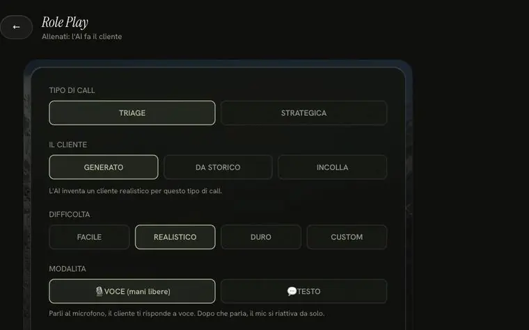
197
SalesCoach AI
Arrivi preparato in call.
Legge il contesto della candidatura e suggerisce
cosa approfondire e come affrontare le obiezioni.
cosa approfondire e come affrontare le obiezioni.
01
Candidatura
02
Contesto
03
Domande da approfondire
04
Call preparata
198
La decisione commerciale
resta una responsabilità umana.
01
Contesto preparato
02
Colloquio
03
Decisione umana
04
Revisione
Il sistema prepara il contesto.
Il supporto previsto dal percorso aiuta a rivedere il lavoro.
Il supporto previsto dal percorso aiuta a rivedere il lavoro.
199
PROBLEMA
LA CONSEGNA
Dopo la vendita comincia
un altro insieme di attività.
Materiali, accessi, avanzamento, domande e applicazione.
200
Academy
Un posto per il percorso.
01
Materiali
02
Percorso
03
Live
04
Applicazione
Materiali, strumenti e live nello stesso ambiente.
Una base comune per sapere dove trovare il lavoro.
Una base comune per sapere dove trovare il lavoro.
201
Nova
Il contesto non va rispiegato ogni volta.
L’assistente AI conserva la direzione del progetto
e risponde anche fuori orario. Il supporto umano è un servizio distinto.
e risponde anche fuori orario. Il supporto umano è un servizio distinto.
01
Contesto del progetto
02
Direzione condivisa
03
Aiuto sul passo successivo
202
L’assistente ti aiuta a procedere.
Il team ti aiuta a correggere.
01
Porti il lavoro
02
Il team rivede
03
Scegli la correzione
04
Riparti
Porti un’offerta, una pagina, una conversazione o un blocco.
Il confronto serve a scegliere il prossimo intervento.
Il confronto serve a scegliere il prossimo intervento.
203
La differenza è
che il lavoro continua da un pezzo all’altro.
Non devi reinventare il tuo business
ogni volta che apri uno strumento.
ogni volta che apri uno strumento.
01
Offerta
02
Funnel e contenuti
03
Dialogo e CRM
04
Vendita
05
Consegna
204
L’offerta guida il messaggio.
01
Cliente e promessa
02
Pagine
03
Contenuti
04
Conversazioni
Chi aiuti, cosa prometti e come lavori
diventano la base di pagine, contenuti e conversazioni.
diventano la base di pagine, contenuti e conversazioni.
205
Il messaggio apre il dialogo.
La risorsa pertinente introduce la conversazione.
Il contatto conserva il contesto nel CRM.
Il contatto conserva il contesto nel CRM.
01
Messaggio
02
Risorsa pertinente
03
Dialogo
04
Contesto nel CRM
206
La vendita prepara la consegna.
01
Vendita
02
Consegna coerente
03
Risultato
04
Nuova prova
Ciò che il cliente ha comprato deve essere chiaro.
Il risultato consegnato può diventare una nuova prova.
Il risultato consegnato può diventare una nuova prova.
207
La differenza da valutare
è chi prepara il lavoro.
METODO DA APPLICARE
Ricevi istruzioni e revisione.
La prima versione la devi produrre tu.
La prima versione la devi produrre tu.
Istruzioni→Produci tu
PROFITOS
Il sistema prepara la prima versione.
Tu la correggi insieme al team.
Tu la correggi insieme al team.
Prima versione→Rivediamo insieme
208
Che cosa resta a te?
Portare informazioni vere. Decidere.
Metterci esperienza e faccia. Valutare e applicare.
Metterci esperienza e faccia. Valutare e applicare.
01
Informazioni vere
02
Decisioni
03
Esperienza e faccia
04
Valutazione e applicazione
209
Quello che vogliamo toglierti
è il lavoro di ripartire e collegare tutto.
La direzione resta tua.
Il sistema e il supporto servono a renderla eseguibile.
Il sistema e il supporto servono a renderla eseguibile.
210
Ora puoi valutare
il percorso per il lavoro che ricevi.
Quali output vengono preparati? Chi li controlla?
Chi interviene quando ti blocchi? Cosa resta a te?
Chi interviene quando ti blocchi? Cosa resta a te?
01
Output preparati
02
Chi li controlla
03
Chi ti sblocca
04
Che cosa resta a te
211
Tutto il lavoro che un business deve coprire
Sono funzioni da coprire. Il punto è chi le esegue e chi le coordina.
Fase
Mansioni necessarie
Fondamenta
Ricerca cliente, strategia, offerta e prove
Validazione
Messaggio, pagina, distribuzione, ascolto e correzione
Percorso cliente
Qualifica, CRM, vendita, consegna e supporto
Amplificazione
Ricerca, copy, piano, riprese e pubblicazione
Coordinamento
Passaggi, contesto, verifica e aggiornamenti
212
In quale ordine implementiamo ogni pezzo
01
1 / Offerta
02
2 / Test sul mercato
03
3 / Percorso cliente
04
4 / Amplificazione
Prima la proposta e la verifica. Poi organizzi i passaggi. I contenuti amplificano il sistema.
213
Fase 1
La base su cui lavora tutto il resto
01
La tua esperienza
02
Analisi offerta + team
03
Proposta scritta
04
Direzione condivisa
In questa fase servono strategia, posizionamento e promessa. Nova mantiene il contesto del lavoro.
214
Fase 2
Mettere la proposta davanti al mercato
01
Offerta
02
Builder + rifinitura
03
Richieste e dialoghi
04
Correzione con il team
Pagine, messaggi e materiali di vendita. Ads costruite insieme quando sono il canale adatto; gestione delegata separata.
215
Fase 3
Organizzare il percorso del cliente
01
Setty e CRM
02
Qualifica e seguito
03
Vendita preparata
04
Consegna e Academy
Ogni contatto deve avere un prossimo passo e una responsabilità. L’intervento umano gestisce decisioni ed eccezioni.
216
Amplificazione
Dall’offerta ai contenuti pubblicati.
Il piano e il montaggio seguono la direzione già costruita.
01
Offerta e prove
02
Peddy: script e piano
03
Tu registri
04
Fabbrica dei Reel
05
Controllo e pubblicazione
Il lavoro umano resta negli input, nelle riprese quando servono e nella verifica.
217
Se affidi il lavoro a un’agenzia
01
Brief e mandato
02
Esecuzione concordata
03
Revisione
04
Coordinamento del resto
Valuta l’ampiezza del mandato, gli output e chi collega il lavoro alle altre funzioni. Un’agenzia può coprire un pezzo o un perimetro più ampio.
218
Se scegli un percorso di formazione e revisione
01
Metodo e istruzioni
02
La tua prima versione
03
Revisione
04
La tua applicazione
Il valore è metodo e correzione. Il tempo di produzione resta da organizzare quando l’esecuzione è a tuo carico.
219
Con ProfitOS il lavoro parte da una prima versione
01
I tuoi input
02
Produzione con i tool
03
Revisione insieme
04
Applicazione e seguito
Il sistema prepara il lavoro. Il cliente porta informazioni, esperienza e decisioni; il team valida e aiuta a correggere.
220
Confronta il lavoro, non il numero di lezioni
Tre modalità di lavoro. Il perimetro concreto va letto nell’offerta che scegli.
Funzione
Agenzia
Percorso formativo
ProfitOS
Prima versione
Fornitore, nel mandato
Cliente, con il metodo
Tool + input del cliente
Correzione
Fornitore e cliente
Esperto e cliente
Cliente e team
Esecuzione
Nel perimetro affidato
Cliente, salvo extra
Tool + attività del cliente
Coordinamento
Da definire nel mandato
Generalmente al cliente
Flusso predisposto + supporto
221
TUTTI QUESTI LAVORI
HANNO UN COSTO.
Puoi pagarli a fornitori.
Puoi impararli e farli tu.
In entrambi i casi, qualcuno deve eseguirli.
Puoi impararli e farli tu.
In entrambi i casi, qualcuno deve eseguirli.
222
Quanto costa farlo fare
Una pagina realizzata per te
da 1.200 €
UNA TANTUM
1Analisi del messaggio
2Copy e design
3Sviluppo e tracciamenti
Esempio di listino: pagina dedicata. Foto, video e licenze a pagamento esclusi salvo accordo.
Fonte: listino professionista / IVA non applicata (forfettario) / verifica 28.10.2026
223
Quanto costa farlo fare
La continuità dei contenuti è un altro lavoro
da 390 €
AL MESE
1Piano e produzione
2Pubblicazione
3Report e revisione
Esempio di gestione Instagram. Riprese sul posto extra. Risposte a commenti e DM al cliente.
Fonte: listino professionista / IVA non applicata (forfettario) / verifica 28.10.2026
224
Quanto costa farlo fare
Gestire le campagne è un servizio distinto
da 350 €
AL MESE, OLTRE AL BUDGET ADS
1Impostazione campagne
2Monitoraggio e correzione
3Report
Qui paghi la gestione. La pubblicità si paga alla piattaforma. Nuovi video e shooting da quotare.
Fonte: listino professionista / IVA non applicata (forfettario) / verifica 28.10.2026
225
Quanto costa farlo fare
Anche l’infrastruttura ha un canone
97 $
AL MESE / PIANO BASE
1Pagine e funnel
2CRM e calendari
3Automazioni
Esempio: una sola piattaforma integrata. Configurazione e decisioni restano da gestire. Consumi extra.
Fonte: listino ufficiale software / USD, tasse secondo checkout / verifica 28.10.2026
226
Un esempio su sei mesi di servizi separati
Voce
Calcolo da listino
Importo
Pagina iniziale
1 × 1.200 €
da 1.200 €
Gestione contenuti
6 × 390 €
da 2.340 €
Gestione campagne
6 × 350 €
da 2.100 €
da 5.640 €
+ 582 $ di software (6 × 97 $)
+ budget ads e voci extra
+ budget ads e voci extra
Simulazione aritmetica di listini separati, non un preventivo né una media. Servizi EUR senza IVA (forfettario).
227
Hai comprato alcuni pezzi. Chi tiene il filo?
01
Fornire informazioni
02
Approvare il lavoro
03
Gestire le conversazioni
04
Vendere e consegnare
L’ampiezza della delega dipende dal mandato. Offerta, responsabilità e collegamenti vanno definiti.
228
Quanto costa farlo fare
Un percorso può costare migliaia di euro
7.000 €
ESEMPIO ANALIZZATO / 6 MESI
1Formazione e metodo
2Revisione e supporto
3Applicazione del cliente
L’affiancamento ha valore. La domanda è quanto lavoro operativo è incluso e quanto resta da applicare.
Fonte: registrazione evento analizzata / prezzo dichiarato in quella sessione, non listino attuale
229
Tre modi diversi di coprire il lavoro
Il confronto utile è tra lavoro coperto, responsabilità e tempo per applicare.
Fornitori / agenzia
Formazione e revisione
ProfitOS
Cosa compri
Esecuzione nel mandato
Metodo e correzione
Tool con contesto + supporto
Prima versione
La produce il fornitore
La produci tu, salvo extra
Tool a partire dai tuoi input
Il tuo lavoro
Brief, decisioni, raccordo
Studio e applicazione
Input, revisione, decisioni
Costo da valutare
Avvio, canoni, extra
Percorso + produzione
Perimetro scelto e attività residue
230
In quale fase interviene ProfitOS
Nova mantiene il contesto. Academy e live sostengono l’applicazione. La tua competenza resta centrale.
Fase
Lavoro necessario
Tool e supporto
1 / Offerta
Posizionamento, promessa, perimetro
Analisi offerta + validazione del team
2 / Test
Pagine, messaggi, feedback
Builder + rifinitura e correzione
3 / Percorso cliente
Qualifica, seguito, contesto
Setty + CRM + preparazione vendita
4 / Amplificazione
Idee, script, piano e risorse
Peddy + revisione del piano
231
Cosa prepariamo e cosa resta a te
SISTEMA E SUPPORTO
Prime versioni, contesto tra i passaggi, revisione e aiuto sulle correzioni.
IL TUO CONTRIBUTO
Informazioni vere, decisioni, riprese quando servono, conversazioni commerciali e lavoro ai tuoi clienti.
Core: strumenti e lavoro validato insieme. Premium: ulteriore realizzazione entro i limiti previsti.
232
IL VALORE È IL LAVORO
CHE RIESCI A PORTARE
A TERMINE.
Non quante lezioni aggiungi.
Non quanti tool devi imparare.
Ma quali passaggi diventano eseguibili, con aiuto.
Non quanti tool devi imparare.
Ma quali passaggi diventano eseguibili, con aiuto.
233
Il tempo va visto attività per attività
Stime indicative pubblicate nella landing. La velocità dipende dalla persona, dagli input e dalla complessità del lavoro.
Attività / unità di lavoro
Con strumenti e revisione
Offerta e posizionamento
Poche ore di lavoro guidato
Preparare 4–5 contenuti
Circa 3 ore tra input, revisione e riprese
Preparare le stories
Circa 1 ora di lavoro personale
Prima versione del funnel
Circa 1 ora di revisione e rifinitura
234
Automatizzare non significa azzerare ogni intervento
Le attività ricorrenti vengono eseguite dal sistema. Setup, controllo, decisioni ed eccezioni hanno un tempo proprio.
Attività
Esecuzione predisposta
Tempo della persona
Consegna risorse
Invio nel flusso configurato
Setup e verifiche
Qualifica e follow-up
Setty e informazioni nel CRM
Revisione ed eccezioni
Vendita
Contesto preparato per il colloquio
Conversazione e decisioni
Consegna al cliente
Materiali e percorso organizzati
Competenza e lavoro concordato
235
Quando ti blocchi,
non serve un’altra lezione.
PORTI IL LAVORO
Offerta, pagina, messaggi o numeri del test.
SI TROVA IL BLOCCO
Il team rivede e indica la correzione da applicare.
SI TORNA A MISURARE
Correggi, riprova e confronta il risultato.
LA CONTINUITÀ
Se manca il risultato, resti secondo garanzia.
Academy e live a vita. Tool esclusi.
Academy e live a vita. Tool esclusi.
236
Le condizioni riservate all’evento
01
Candidatura
02
Analisi della situazione
03
Scelta del percorso
Riservate alle prime 10 persone che si candidano.
I benefici si applicano se entrano nel percorso.
I benefici si applicano se entrano nel percorso.
237
La garanzia del kickoff
01
Kickoff
02
Vuoi proseguire?
03
Se no: rimborso
Se dopo il kickoff non vuoi proseguire con noi,
ti restituiamo i soldi.
ti restituiamo i soldi.
238
Se il risultato non arriva,
non resti senza supporto.
01
Applichi il percorso
02
Serve più tempo?
03
Continuiamo fino al risultato
Resti nel percorso fino al risultato, secondo la garanzia.
Academy e live settimanali a vita. I tool non sono a vita.
Academy e live settimanali a vita. I tool non sono a vita.
239
Bonus primi acquisti
I primi 5 acquisti
hanno il kickoff con me.
Qualunque sia il pacchetto scelto.
È un bonus sui primi acquisti, distinto dalle 10 candidature.
È un bonus sui primi acquisti, distinto dalle 10 candidature.
5
240
Candidatura
Porta il tuo
business
sul tavolo.
Candidati
landing.profitos.it/candidatura
241
Domande frequenti
Partire dalla tua situazione
Posso partire da zero?
Sì, con una competenza reale da offrire, tempo e disponibilità a lavorare sul progetto.
Ho già fatto altri percorsi. Serve?
Partiamo da ciò che hai già costruito e dal lavoro che manca per applicarlo.
Ho già un’agenzia. Devo lasciarla?
Prima chiarisci cosa copre e cosa manca. Valutiamo come collegare il lavoro esistente.
Posso entrare a percentuale?
Le partnership si valutano su aziende e condizioni concrete. Prima devono esserci le fondamenta.
242
Domande frequenti
Video, strumenti e tempo
Chi gira e monta i video?
Tu registri quando serve. Fabbrica dei Reel monta in batch; controlli prima di pubblicare.
Devo imparare a montare?
Parti dal lavoro del tool. Rivedi tagli e anteprima per correggere il risultato.
Quanto tempo devo dedicarci?
Guardiamo input, riprese, revisione e applicazione. Il tempo cambia da persona a persona.
Devo usare tutti i tool subito?
Parti dalle attività necessarie nella tua fase. Gli strumenti seguono il lavoro da fare.
243
Domande frequenti
Canali, contenuti e mercato
Mi servono tanti follower?
Per testare la proposta servono persone in target e conversazioni utili. Il profilo è uno dei canali.
Devo pubblicare ogni giorno?
Il piano dipende dalla funzione del contenuto nel percorso del cliente e dal lavoro sostenibile.
Devo fare per forza le ads?
Si valutano come canale di test o acquisizione. Budget media e gestione delegata sono voci distinte.
E se l’offerta non vende?
Ascolti le risposte, controlli i passaggi e rivedi la proposta con il supporto del team.
244
Domande frequenti
Supporto e garanzie
Mi segue una persona o solo l’AI?
I tool preparano il lavoro. Il team ti aiuta a rivederlo e a trovare le correzioni.
Se non ottengo il risultato?
Continui a restare secondo la garanzia del percorso, con il lavoro di applicazione previsto.
I tool restano a vita?
No. La permanenza a vita riguarda Academy e live settimanali, non i tool.
E se dopo il kickoff non mi trovo?
Se dopo il kickoff non vuoi proseguire con noi, ti restituiamo i soldi.
245
VIP
Portiamo i casi
sul tavolo operatorio.
VIP
Analisi dei casi più rappresentativi
246
La morte del personal brand
Grazie.
247